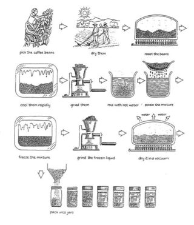

You should spend about 20 minutes on this task.
The diagram below shows how coffee is produced and prepared for sale in supermarkets and shops.
Summarise the information by selecting and reporting the main features and make comparisons where relevant.
Write at least 150 words.

The picture illustrates the process of coffee manufacture and preparation for sale on the market.
It is clear that there are 11 stages in the production of coffee. The process begins with the picking of coffee beans, and ends at the packing stage.
Looking at the coffee production process in detail, coffee beans must first be picked in the fields. These beans are then dried, roasted, and cooled before being put in a grinding machine, which turns the beans into coffee granules.
At the sixth stage in the process, the ground coffee is mixed with hot water, and the resulting mixture is strained. Next, the mixture is frozen and then passed once again through the grinder. After that, the ground, frozen liquid is dried in a vacuum so that the water evaporates, leaving the coffee granules. Finally, these granules are packed into coffee jars for delivery to shops.
Note:
- Passives : must be picked; are dried, roasted and cooled; is mixed...
- Sequencing : then; and; at the sixth stage; next; after that; finally...
You should spend about 40 minutes on this task.
Some people think that art is an essential subject for children at school while others think it is a waste of time.
Discuss both views and give your opinion
Give reasons for your answer and include any relevant examples from your own knowledge or experience.
Write at least 250 words.
The question whether art education is necessary for children at school has drawn much attention from the public. While some people argue that teaching art subjects is a waste of time, I believe that it is significant for children to learn art-related subjects.
At the outset, it is thought by a handful of people that art education at school is a waste of time. There are more important subjects that would benefit children for their future life. Science, technology and mathematics, for example, are of great significant subjects which allows students to find a good job after graduation. On the other hand, studying arts does not lead to a successful career. It is easy to see that those days, most artists have been struggling to make a living from selling their work of art.
Despite the above arguments, from my perspective, learning art is necessary for students at school because of some radical reasons. Firstly, art subjects including music, drawing, painting and sculpture allow children to enter a state of relaxation. After concentration on STEM subjects, what learners need is to unwind by usefully physical activities in order to make a balance. For instance, singing a song in the musical class could bring positive emotion to students. Secondly, studying art could improve performance in other subjects. It is true that art enhances fine motor skills, hand-eye coordination and problem-solving skills which may assists children in attaining better learning outcomes.
In conclusion, although several individuals claim that it is a waste of time for art education, it seems to me that having access to art classes is essential for children.
(Written by Mason) (Band 6.0) (269 words)